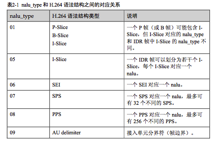

Stephen_Dustephendu.blog.chinaunix.net
昵称：晨中薇露 Believe in yourself!
分类： Android平台
1．DTS, PTS
对于一个ES来说，他又许多I,P,B帧，而P, B帧都是以I，P帧作为参考。
由于B帧是前向后向参考，因此要对B帧作decode的话，
就必须先decode该B帧后面的P,或者I帧，
于是，decode的时间与帧的真正的present的时间就不一致了，
按照DTS一次对各个帧进行decode，
然后再按照PTS对各个帧进行展现
2.转自http://legendbaby.blogbus.com/logs/22585281.html
Z=ROUND(Y/Qstep)其中Z为量化值，Y为输入系数值，Qstep为量化步长，量化步长有52种，每个宏块的量化步长由量化参数QP决定，QP每增加1，量化步长增加12.5%。
H.264将一部分变换系数和量化和在一起实现，即在Zij=Yij/Qstep的基础上进行，变成Zij=(Yij*PF/Qstep),这里PF就是变换时提取出的系数a2,ab/2,b2/4......
实 际实现时，用移位的方法实现除法，即Zij=Yij.MF/2qbit;这样就有MF/2qbit=PF/Qstep，则MF=2qbitPF /Qstep，qbit=15+(QP/6),所以有QP相差6，MF增加一倍。QP=4时，Qstep=1，求出对应ij的MF，就是量化矩阵了。
3.
H.264 基本语法结构简介
H.264 相对以往的视频压缩编码标准来说,在语法结构上有很大的改变,其中最大的改 变体现在以下两个方面:
取消帧级语法单元
H.264 语法中没有 frame_header 之类的语法单元,帧信息全部放在 slice_header、 SPS 和 PPS 中,这样可增强 slice 单元解码的独立性,提高码流的抗丢包、抗误码 能力。但由于一帧图像可以对应多个 slice,因此解码器无法通过解析类似 frame_header 的语法来识别码流中的一帧数据。
引入 SPS、PPS 等参数集概念
-
? 将一个视频序列(从 IDR 帧开始到下一个 IDR 帧之前的数据称为一个视频序
列)全部图像的共同特征抽取出来,放在 SPS 语法单元中。
-
? 将各个图像的典型特征抽取出来,放在 PPS 语法单元中。
-
? 只有视频序列之间才能切换 SPS,即只有 IDR 帧的第一个 slice 可以切换 SPS。
-
? 只有图像之间才能切换 PPS,即只有每帧图像的第一个 slice 才能切换 PPS。
从宏观上来说,SPS、PPS、IDR 帧(包含一个或多个 I-Slice)、P 帧(包含一个或多个 P-Slice)、B 帧(包含一个或多个 B-Slice)共同构成典型的 H.264 码流结构。除上述典 型语法结构外,为了方便传输私有信息,H.264 还定义了 SEI 语法结构。除非编码器和 解码器进行特定的语法协商,解码器一般不对 SEI 包进行解析
4.
5.每个 SPS 或者 PPS 仅对应一个 nal
6.解码视频通道切换
一般来说,在视频点播或者视频通道切换时,仅搜索 IDR 帧送给解码器是不够的,还 必须将对应的 SPS 和 PPS 送给解码器。H.264 并没有要求 SPS、PPS 以及 IDR 帧捆绑 传输,只是规定一定要在 IDR 帧之前传输相应的 SPS 和 PPS。因此,最严谨的做法是 从视频码流的起始位置开始搜索,将获取的全部 SPS 和 PPS 依次送给解码器,直到搜 索到一个 IDR 帧。
为了降低应用的复杂性,在视频点播或者实时编解码应用场景中,编码器一般连续传 递 SPS、PPS 和 IDR 帧,即严格在 IDR 帧之前传递当前视频序列所需要的 SPS 参数和 若干个 PPS 参数。Hi3507 编码器遵循这一准则,因此可以在每个 IDR 帧的第一个 nalu 前面找到 4 个尺寸较小的 nalu,它们即为当前视频序列解码所需要的全部参数,其中 第一个 nalu 为 SPS。简单地说,对于 Hi3507 码流,只要找到 SPS,并从此位置开始送 给解码器解码,那么一定可以得到完整的视频图像。
在视频输入通道不断切换的应用场景中(如单通道解码器用时间片的方式点播多个编 码通道码流的场景),需要不断地切换解码器的输入视频源通道。基于上述描述的解码 完整性原则,切换不是从任意位置开始的。也就是说,如果解码器需要切换到某个视 频通道,那么必须从获取这个视频通道的 SPS 的位置开始切换,否则在切换点,视频 图像会出现异常。
7.流媒体网络传输的方式
基于 MPEG-4 的方案在网络传输时通常采用以下两种方案:
-
用尺寸小于网络层 MTU 的定长数据段来切分线性的原始码流。
-
直接传输增加私有格式头的一整帧数据,网络层对整帧数据进行切分,而应用层
则忽略由于网络拥塞而丢弃的包。
H.264 提出比 MPEG-4 更优秀的网络传输抗误码解决方案。H.264 包含 VCL 和 NAL,VCL 和 NAL 的特点如下:
-
VCL 包括核心压缩引擎和块/宏块/slice 的语法级别定义,应该尽量将 VCL 独
立于网络之外。
-
NAL 将 VCL 产生的比特字符串适配到各种各样的网络环境中。NAL 覆盖所有
slice 级以上的语法级别,并包含以下机制:
? 提供每一个 slice 解码时所需要的参数数据。 ? 预防起始码冲突。
-
? 支持 SEI。
-
? 提供将编码 slice 的比特字符串在基于比特流的网络上进行传送。
H.264 将 NAL 与 VCL 分离的主要原因如下:
-
定义一个 VCL 信号处理与 NAL 传输的接口,这样允许 VCL 和 NAL 工作在完全
不同的处理器平台上。
-
VCL 和 NAL 都被设计成适应于异质传输环境,当网络环境不同时,网关不需要
对 VCL 比特流进行重构和重编码。
IP 网络的类型可分为以下三种:
-
不可控 IP 网络(如 Internet)。
-
可控 IP 网络(如广域网)。
-
无线 IP 网络(如 3G 网络)。
这三种 IP 网络有不同的 MTU、比特出错概率和 TCP 使用标记。两个 IP 节点之间的 MTU 是动态变化的,通常假定有线 IP 网络的 MTU 为 1.5KB,无线 IP 网络 MTU 的范 围从 100byte 到 500byte。
在以 UDP 发包时建议以 nalu 为基本单元,这样便于在应用层进行封装。推荐使用 RTP 进行组包传输,一个 RTP 分组里放一个 nalu,将 nalu(包括同步头)放入 RTP 的载荷 中,并设置 RTP 的头信息。由于包传送的路径不同,接收端需要重新对 slice 分组进行 排序,RTP 包含的次序信息可以用来解决这一问题。
不要随意丢弃尺寸大于 MTU 的 UDP 分组,可直接发送,由网络驱动层进行拆包和组 包,对应用层不会产生影响。即使网络出现 UDP 丢包,丢弃也是一个完整的 nalu。在 H.264 中,nalu 是基于 VCL slice 的网络层封装,每个 slice 对应于多个宏块(不同于 MPEG-4)。H.264 在编码时不同 slice 的宏块之间语法是非相关的,丢掉少量的 slice 不 会对其他 slice 的解码产生影响。
H.264 的应用越来越广泛,在实际的应用方案中将存在 MPEG-4 与 H.264 并存的情 形。为了解码端的系统稳定,避免软件崩溃,建议以 nalu 为基本单元放入分组包里传 送,这样可以做到 H.264 与 MPEG-4 互不干扰,稳定并存于一套系统中
-
播放器在下列情况下需要进行丢包处理:
-
计算机 CPU 负荷过重或者网络抖动等原因引起播放器前端码流缓冲区即将溢出。
-
应用层检测到当前网络丢包现象严重。
-
播放器调度需要进行丢包处理。
目前通用的主动丢包处理方法如下: -
尽可能将收到的所有码流信息送至解码器,不要轻易丢弃已经收到的码流信息。
-
如果播放器在上述几种情况下需要主动丢包,则播放器应从当前帧开始丢弃,一 直丢弃到下一个 IDR 帧。
6.
4 Infile can be raw (in which case resolution is required),
5 or YUV4MPEG (*.y4m),
6 or Avisynth if compiled with support (no).
7 or libav* formats if compiled with lavf support (no) or ffms support (no).
8 Outfile type is selected by filename:
9 .264 -> Raw bytestream
10 .mkv -> Matroska
11 .flv -> Flash Video
12 .mp4 -> MP4 if compiled with GPAC support (yes)
13 Output bit depth: 8 (configured at compile time)
21 Example usage:
23 Constant quality mode:
24 x264 --crf 24 -o <output> <input>
25
crf
--crf 23 （默认）
一种根据片子质量自动分配码率的vbr码率控制方式。一遍编码，如果对码率没要求请尽量使用crf模式。
可用的值从1到51，越小编码质量越好，码率越高。一般使用16到24，可以为浮点。
crf并不是恒定质量的方式，同一片子同一crf值，其他参数不同可能码率和质量能差比较大，不同的片子之间就更没有可比性了。
CRF压制算法设置
crf就是constant ratefactor，就是保证“一定质量”，智能分配码率。智能分配码率包含两个意思：
同 一帧内分配码率。就是在细节的地方分配更多的字节（bits）。实际效果举例：前景细节保留完整，背景压缩得很厉害。帧间分配码率。crf会智能分析哪些 是重要帧，哪些是次要帧。
重要帧会得到更多的字节。实际效果举例：帧排列：清晰-模糊-模糊-清晰。但是给人的感觉会是比较清晰的，因为看电影的时候一般 注意焦点，不会去辨认背景。次要帧一般都一闪而过，也不容易注意到。
x264参数设置：
main里面的crf调节是对上面提到的“一定质量”的调节。值18基本为无损，19-21.5为高质量，22-26为中等质量。
在rate control里面还有一个adaptive quantizers，是对智能分配码率的调节。数值越小，智能分配越极端，就是说会把更多的码率给细节和关键帧。
大片颜色区域和次要帧会压缩得更厉害。
这两个参数是crf最重要的参数。
26 Two-pass with a bitrate of 1000kbps:27 x264 --pass 1 --bitrate 1000 -o <output> <input>
28 x264 --pass 2 --bitrate 1000 -o <output> <input>
bitrate=<value>
Sets the average bitrate to be used in kbits/second (default: off).
Since local bitrate may vary, this average may be inaccurate for very
short videos (see ratetol). Constant bitrate can be achieved by
combining this with vbv_maxrate, at significant reduction in quality.
30 Lossless:
31 x264 --qp 0 -o <output> <input>
32
x264有4种码率控制方式，分别是1pass bitrate、crf、qp和2pass bitrate。其中2pass bitrate包含pass bitrate。
1pass bitrate和qp（恒定量化值）一般不推荐使用。
33 Maximum PSNR at the cost of speed and visual quality:34 x264 --preset placebo --tune psnr -o <output> <input>
36 Constant bitrate at 1000kbps with a 2 second-buffer:
37 x264 --vbv-bufsize 2000 --bitrate 1000 -o <output> <input>
39 Presets:
41 --profile <string> Force the limits of an H.264 profile
42 Overrides all settings.
43 - baseline:
44 --no-8x8dct --bframes 0 --no-cabac
45 --cqm flat --weightp 0
46 No interlaced.
47 No lossless.
48 - main:
49 --no-8x8dct --cqm flat
50 No lossless.
51 - high:
52 No lossless.
53 - high10:
54 No lossless.
55 Support for bit depth 8-10.
56 - high422:
57 No lossless.
58 Support for bit depth 8-10.
59 Support for 4:2:0/4:2:2 chroma subsampling.
60 - high444:
61 Support for bit depth 8-10.
62 Support for 4:2:0/4:2:2/4:4:4 chroma subsampling.
63 --preset <string> Use a preset to select encoding settings [medium]
64 Overridden by user settings.
65 - ultrafast:
66 --no-8x8dct --aq-mode 0 --b-adapt 0
67 --bframes 0 --no-cabac --no-deblock
68 --no-mbtree --me dia --no-mixed-refs
69 --partitions none --rc-lookahead 0 --ref 1
70 --scenecut 0 --subme 0 --trellis 0
71 --no-weightb --weightp 0
72 - superfast:
73 --no-mbtree --me dia --no-mixed-refs
74 --partitions i8x8,i4x4 --rc-lookahead 0
75 --ref 1 --subme 1 --trellis 0 --weightp 1
76 - veryfast:
77 --no-mixed-refs --rc-lookahead 10
78 --ref 1 --subme 2 --trellis 0 --weightp 1
79 - faster:
80 --no-mixed-refs --rc-lookahead 20
81 --ref 2 --subme 4 --weightp 1
82 - fast:
83 --rc-lookahead 30 --ref 2 --subme 6
84 --weightp 1
85 - medium:
86 Default settings apply.
87 - slow:
88 --b-adapt 2 --direct auto --me umh
89 --rc-lookahead 50 --ref 5 --subme 8
90 - slower:
91 --b-adapt 2 --direct auto --me umh
92 --partitions all --rc-lookahead 60
93 --ref 8 --subme 9 --trellis 2
94 - veryslow:
95 --b-adapt 2 --bframes 8 --direct auto
96 --me umh --merange 24 --partitions all
97 --ref 16 --subme 10 --trellis 2
98 --rc-lookahead 60
99 - placebo:
100 --bframes 16 --b-adapt 2 --direct auto
101 --slow-firstpass --no-fast-pskip
102 --me tesa --merange 24 --partitions all
103 --rc-lookahead 60 --ref 16 --subme 11
104 --trellis 2
105 --tune <string> Tune the settings for a particular type of source
106 or situation
107 Overridden by user settings.
108 Multiple tunings are separated by commas.
109 Only one psy tuning can be used at a time.
110 - film (psy tuning):
111 --deblock -1:-1 --psy-rd <unset>:0.15
112 - animation (psy tuning):
113 --bframes {+2} --deblock 1:1
114 --psy-rd 0.4:<unset> --aq-strength 0.6
115 --ref {Double if >1 else 1}
116 - grain (psy tuning):
117 --aq-strength 0.5 --no-dct-decimate
118 --deadzone-inter 6 --deadzone-intra 6
119 --deblock -2:-2 --ipratio 1.1
120 --pbratio 1.1 --psy-rd <unset>:0.25
121 --qcomp 0.8
122 - stillimage (psy tuning):
123 --aq-strength 1.2 --deblock -3:-3
124 --psy-rd 2.0:0.7
125 - psnr (psy tuning):
126 --aq-mode 0 --no-psy
127 - ssim (psy tuning):
128 --aq-mode 2 --no-psy
129 - fastdecode:
130 --no-cabac --no-deblock --no-weightb
131 --weightp 0
132 - zerolatency:
133 --bframes 0 --force-cfr --no-mbtree
134 --sync-lookahead 0 --sliced-threads
135 --rc-lookahead 0
136 --slow-firstpass Don't force these faster settings with --pass 1:
137 --no-8x8dct --me dia --partitions none
138 --ref 1 --subme {2 if >2 else unchanged}
139 --trellis 0 --fast-pskip
140
141 Frame-type options:
143 -I, --keyint <integer or "infinite"> Maximum GOP size [250]
Sets maximum interval between IDR-frames (default: 250). Larger values save bits, thus improve quality, at the cost of seeking precision. Unlike MPEG-1/2/4, H.264 does not suffer from DCT drift with large values of keyint.
最长相隔多少帧出现一个IDR帧
144 -i, --min-keyint <integer> Minimum GOP size [auto]
Sets minimum interval between IDR-frames (default: 25). If scenecuts appear within this interval, they are still encoded as I-frames, but do not start a new GOP. In H.264, I-frames do not necessarily bound a closed GOP because it is allowable for a P-frame to be predicted from more frames than just the one frame before it (also see frameref). Therefore, I-frames are not necessarily seekable. IDR-frames restrict subsequent P-frames from referring to any frame prior to the IDR-frame.
最少相隔多少帧出现一个IDR帧
145 --no-scenecut Disable adaptive I-frame decision
146 --scenecut <integer> How aggressively to insert extra I-frames [40]
Controls how aggressively to insert extra I-frames (default: 40). With small values of scenecut, the codec often has to force an I-frame when it would exceed keyint.
Good values of scenecut may find a better location for the I-frame.
Large values use more I-frames than necessary, thus wasting bits. -1 disables scene-cut detection,
so I-frames are inserted only once every other keyint frames, even if a scene-cut occurs earlier.
This is not recommended and wastes
bitrate as scenecuts encoded as P-frames are just as big as I-frames,
but do not reset the "keyint counter"
147 --intra-refresh Use Periodic Intra Refresh instead of IDR frames
Periodic Intra Refresh can replace keyframes by using a column of intra
blocks that move across the video from one side to the other,
thereby
"refreshing" the image. In effect, instead of a big keyframe, the
keyframe is "spread" over many frames.
The video is still seekable: a
special header, called the SEI Recovery Point,
tells the decoder to
"start here, decode X frames, and then start displaying the video."
停用IDR帧，作为替代x264会为每隔--keyint的 帧的每个宏区块（macroblock）使用内部编码（intra coding）。
区块是以一个水平卷动的行刷新，称为刷新波（refresh wave）。
这有利于低延迟的资料流，使它有可能比标准的IDR帧达到更加固定的帧大小。
它也增强了视讯资料流对封包遗失的恢复能力。此选项会降低压缩效 率，因此必要时才使用。
148 -b, --bframes <integer> Number of B-frames between I and P [3]
设定x264可以使用的最大并行B帧数。
没有B帧时，一个典型的x264资料流有着像这样的帧类型：IPPPPP...PI。当设了--bframes 2时，最多两个连续的P帧可以被B帧取代，就像：IBPBBPBPPPB...PI。
B帧类似于P帧，除了B帧还能从它之后的帧做动态预测（motion prediction）。就压缩比来说效率会大幅提高。它们的平均品质是由--pbratio所控制
150 Higher values may lower threading efficiency.
151 - 0: Disabled
152 - 1: Fast
153 - 2: Optimal (slow with high --bframes)
默认值：1
设定弹性B帧位置决策算法。此设定控制x264如何决定要放置P帧或B帧。
0：停用，总是挑选B帧。这与旧的no-b-adapt设定相同作用。 1：“快速”算法，较快，越大的--bframes值会稍微提高速度。当使用此模式时，基本上建议搭配--bframes 16使用。 2：“最佳”算法，较慢，越大的--bframes值会大幅降低速度。注意：对于多重阶段（multi-pass）编码，仅在第一阶段（first pass）才需要此选项，因为帧类型在此时已经决定完了。
154 --b-bias <integer> Influences how often B-frames are used [0]默认值：0
控制使用B帧而不使用P帧的可能性。大于0的值增加偏向B帧的加权，而小于0的值则相反。范围是从-100到100。
100并不保证全是B帧（要全是B帧该使用--b-adapt 0），而-100也不保证全是P帧。
仅在你认为能比x264做出更好的位元率控制决策时才使用此选项。
155 --b-pyramid <string> Keep some B-frames as references [normal]156 - none: Disabled
157 - strict: Strictly hierarchical pyramid
158 - normal: Non-strict (not Blu-ray compatible)
默认值：normal
允许B帧作为其他帧的参照帧。没有此设定时，帧只能参照I/P帧。虽然I/P帧因其较高的品质作为参照帧更有价值，
但B帧也是很有用的。作为参照帧的B帧会得到一个介于P帧和普通B帧之间的量化值。
b-pyramid需要至少两个以上的--bframes才会运作。
如果是在为蓝光编码，须使用none或strict。
none：不允许B帧作为参照帧。 strict：每minigop允许一个B帧作为参照帧，这是蓝光标准强制执行的限制。 normal：每minigop允许多个B帧作为参照帧。 159 --open-gop Use recovery points to close GOPs160 Only available with b-frames
默认值：none
open-gop是一个提高效率的编码技术。有三种模式：
none：停用open-gop。 normal：启用open-gop。 bluray：启用open-gop。一个效率较低的open-gop版本，因为normal模式无法用于蓝光编码。
某些解码器不完全支援open-gop资料流，这就是为什么此选项并未默认为启用。
如果想启用open-gop，应该先测试所有可能用来播放的解码器。
162 -r, --ref <integer> Number of reference frames [3]
163 --no-deblock Disable loop filter
164 -f, --deblock <alpha:beta> Loop filter parameters [0:0]
165 --slices <integer> Number of slices per frame; forces rectangular
166 slices and is overridden by other slicing options
167 --slice-max-size <integer> Limit the size of each slice in bytes
168 --slice-max-mbs <integer> Limit the size of each slice in macroblocks
169 --tff Enable interlaced mode (top field first)
170 --bff Enable interlaced mode (bottom field first)
171 --constrained-intra Enable constrained intra prediction.
172 --pulldown <string> Use soft pulldown to change frame rate
173 - none, 22, 32, 64, double, triple, euro (requires cfr input)
174 --fake-interlaced Flag stream as interlaced but encode progressive.
175 Makes it possible to encode 25p and 30p Blu-Ray
176 streams. Ignored in interlaced mode.
177 --frame-packing <integer> For stereoscopic videos define frame arrangement
178 - 0: checkerboard - pixels are alternatively from L and R
179 - 1: column alternation - L and R are interlaced by column
180 - 2: row alternation - L and R are interlaced by row
181 - 3: side by side - L is on the left, R on the right
182 - 4: top bottom - L is on top, R on bottom
183 - 5: frame alternation - one view per frame
184
185 Ratecontrol:
186
187 -q, --qp <integer> Force constant QP (0-69, 0=lossless)
188 -B, --bitrate <integer> Set bitrate (kbit/s)
189 --crf <float> Quality-based VBR (0-51) [23.0]
190 --rc-lookahead <integer> Number of frames for frametype lookahead [40]
191 --vbv-maxrate <integer> Max local bitrate (kbit/s) [0]
192 --vbv-bufsize <integer> Set size of the VBV buffer (kbit) [0]
193 --vbv-init <float> Initial VBV buffer occupancy [0.9]
194 --crf-max <float> With CRF+VBV, limit RF to this value
195 May cause VBV underflows!
196 --qpmin <integer> Set min QP [0]
197 --qpmax <integer> Set max QP [69]
198 --qpstep <integer> Set max QP step [4]
199 --ratetol <float> Tolerance of ABR ratecontrol and VBV [1.0]
200 --ipratio <float> QP factor between I and P [1.40]
201 --pbratio <float> QP factor between P and B [1.30]
202 --chroma-qp-offset <integer> QP difference between chroma and luma [0]
203 --aq-mode <integer> AQ method [1]
204 - 0: Disabled
205 - 1: Variance AQ (complexity mask)
206 - 2: Auto-variance AQ (experimental)
207 --aq-strength <float> Reduces blocking and blurring in flat and
208 textured areas. [1.0]
209
210 -p, --pass <integer> Enable multipass ratecontrol
211 - 1: First pass, creates stats file
212 - 2: Last pass, does not overwrite stats file
213 - 3: Nth pass, overwrites stats file
214 --stats <string> Filename for 2 pass stats ["x264_2pass.log"]
215 --no-mbtree Disable mb-tree ratecontrol.
216 --qcomp <float> QP curve compression [0.60]
217 --cplxblur <float> Reduce fluctuations in QP (before curve compression) [20.0]
218 --qblur <float> Reduce fluctuations in QP (after curve compression) [0.5]
219 --zones <zone0>/<zone1>/... Tweak the bitrate of regions of the video
220 Each zone is of the form
221 <start frame>,<end frame>,<option>
222 where <option> is either
223 q=<integer> (force QP)
224 or b=<float> (bitrate multiplier)
225 --qpfile <string> Force frametypes and QPs for some or all frames
226 Format of each line: framenumber frametype QP
227 QP is optional (none lets x264 choose). Frametypes: I,i,K,P,B,b.
228 K=<I or i> depending on open-gop setting
229 QPs are restricted by qpmin/qpmax.
230
231 Analysis:
232
233 -A, --partitions <string> Partitions to consider ["p8x8,b8x8,i8x8,i4x4"]
234 - p8x8, p4x4, b8x8, i8x8, i4x4
235 - none, all
236 (p4x4 requires p8x8. i8x8 requires --8x8dct.)
237 --direct <string> Direct MV prediction mode ["spatial"]
238 - none, spatial, temporal, auto
239 --no-weightb Disable weighted prediction for B-frames
240 --weightp <integer> Weighted prediction for P-frames [2]
241 - 0: Disabled
242 - 1: Weighted refs
243 - 2: Weighted refs + Duplicates
244 --me <string> Integer pixel motion estimation method ["hex"]
245 - dia: diamond search, radius 1 (fast)
246 - hex: hexagonal search, radius 2
247 - umh: uneven multi-hexagon search
248 - esa: exhaustive search
249 - tesa: hadamard exhaustive search (slow)
250 --merange <integer> Maximum motion vector search range [16]
251 --mvrange <integer> Maximum motion vector length [-1 (auto)]
252 --mvrange-thread <int> Minimum buffer between threads [-1 (auto)]
253 -m, --subme <integer> Subpixel motion estimation and mode decision [7]
254 - 0: fullpel only (not recommended)
255 - 1: SAD mode decision, one qpel iteration
256 - 2: SATD mode decision
257 - 3-5: Progressively more qpel
258 - 6: RD mode decision for I/P-frames
259 - 7: RD mode decision for all frames
260 - 8: RD refinement for I/P-frames
261 - 9: RD refinement for all frames
262 - 10: QP-RD - requires trellis=2, aq-mode>0
263 - 11: Full RD: disable all early terminations
264 --psy-rd <float:float> Strength of psychovisual optimization ["1.0:0.0"]
265 #1: RD (requires subme>=6)
266 #2: Trellis (requires trellis, experimental)
267 --no-psy Disable all visual optimizations that worsen
268 both PSNR and SSIM.
269 --no-mixed-refs Don't decide references on a per partition basis
270 --no-chroma-me Ignore chroma in motion estimation
271 --no-8x8dct Disable adaptive spatial transform size
272 -t, --trellis <integer> Trellis RD quantization. [1]
273 - 0: disabled
274 - 1: enabled only on the final encode of a MB
275 - 2: enabled on all mode decisions
276 --no-fast-pskip Disables early SKIP detection on P-frames
277 --no-dct-decimate Disables coefficient thresholding on P-frames
278 --nr <integer> Noise reduction [0]
279
280 --deadzone-inter <int> Set the size of the inter luma quantization deadzone [21]
281 --deadzone-intra <int> Set the size of the intra luma quantization deadzone [11]
282 Deadzones should be in the range 0 - 32.
283 --cqm <string> Preset quant matrices ["flat"]
284 - jvt, flat
285 --cqmfile <string> Read custom quant matrices from a JM-compatible file
286 Overrides any other --cqm* options.
287 --cqm4 <list> Set all 4x4 quant matrices
288 Takes a comma-separated list of 16 integers.
289 --cqm8 <list> Set all 8x8 quant matrices
290 Takes a comma-separated list of 64 integers.
291 --cqm4i, --cqm4p, --cqm8i, --cqm8p <list>
292 Set both luma and chroma quant matrices
293 --cqm4iy, --cqm4ic, --cqm4py, --cqm4pc <list>
294 Set individual quant matrices
295
296 Video Usability Info (Annex E):
297 The VUI settings are not used by the encoder but are merely suggestions to
298 the playback equipment. See doc/vui.txt for details. Use at your own risk.
299
300 --overscan <string> Specify crop overscan setting ["undef"]
301 - undef, show, crop
302 --videoformat <string> Specify video format ["undef"]
303 - component, pal, ntsc, secam, mac, undef
304 --range <string> Specify color range ["auto"]
305 - auto, tv, pc
306 --colorprim <string> Specify color primaries ["undef"]
307 - undef, bt709, bt470m, bt470bg
308 smpte170m, smpte240m, film
309 --transfer <string> Specify transfer characteristics ["undef"]
310 - undef, bt709, bt470m, bt470bg, linear,
311 log100, log316, smpte170m, smpte240m
312 --colormatrix <string> Specify color matrix setting ["???"]
313 - undef, bt709, fcc, bt470bg
314 smpte170m, smpte240m, GBR, YCgCo
315 --chromaloc <integer> Specify chroma sample location (0 to 5) [0]
316 --nal-hrd <string> Signal HRD information (requires vbv-bufsize)
317 - none, vbr, cbr (cbr not allowed in .mp4)
318 --pic-struct Force pic_struct in Picture Timing SEI
319 --crop-rect <string> Add 'left,top,right,bottom' to the bitstream-level
320 cropping rectangle
321
322 Input/Output:
323
324 -o, --output <string> Specify output file
325 --muxer <string> Specify output container format ["auto"]
326 - auto, raw, mkv, flv, mp4
327 --demuxer <string> Specify input container format ["auto"]
328 - auto, raw, y4m
329 --input-fmt <string> Specify input file format (requires lavf support)
330 --input-csp <string> Specify input colorspace format for raw input
331 - valid csps for `raw' demuxer:
332 i420, yv12, nv12, i422, yv16, nv16, i444, yv24, bgr, bgra, rgb
333 --output-csp <string> Specify output colorspace ["i420"]
334 - i420, i422, i444, rgb
335 --input-depth <integer> Specify input bit depth for raw input
336 --input-range <string> Specify input color range ["auto"]
337 - auto, tv, pc
338 --input-res <intxint> Specify input resolution (width x height)
339 --index <string> Filename for input index file
340 --sar width:height Specify Sample Aspect Ratio
341 --fps <float|rational> Specify framerate
342 --seek <integer> First frame to encode
343 --frames <integer> Maximum number of frames to encode
344 --level <string> Specify level (as defined by Annex A)
345 --bluray-compat Enable compatibility hacks for Blu-ray support
346
347 -v, --verbose Print stats for each frame
348 --no-progress Don't show the progress indicator while encoding
349 --quiet Quiet Mode
350 --log-level <string> Specify the maximum level of logging ["info"]
351 - none, error, warning, info, debug
352 --psnr Enable PSNR computation
353 --ssim Enable SSIM computation
354 --threads <integer> Force a specific number of threads
355 --lookahead-threads <integer> Force a specific number of lookahead threads
356 --sliced-threads Low-latency but lower-efficiency threading
357 --thread-input Run Avisynth in its own thread
358 --sync-lookahead <integer> Number of buffer frames for threaded lookahead
359 --non-deterministic Slightly improve quality of SMP, at the cost of repeatability
360 --cpu-independent Ensure exact reproducibility across different cpus,
361 as opposed to letting them select different algorithms
362 --asm <integer> Override CPU detection
363 --no-asm Disable all CPU optimizations
364 --visualize Show MB types overlayed on the encoded video
365 --dump-yuv <string> Save reconstructed frames
366 --sps-id <integer> Set SPS and PPS id numbers [0]
367 --aud Use access unit delimiters
368 --force-cfr Force constant framerate timestamp generation
369 --tcfile-in <string> Force timestamp generation with timecode file
370 --tcfile-out <string> Output timecode v2 file from input timestamps
371 --timebase <int/int> Specify timebase numerator and denominator
372 <integer> Specify timebase numerator for input timecode file
373 or specify timebase denominator for other input
374 --dts-compress Eliminate initial delay with container DTS hack
375
376 Filtering:
377
378 --vf, --video-filter <filter0>/<filter1>/... Apply video filtering to the input file
379
380 Filter options may be specified in <filter>:<option>=<value> format.
381
382 Available filters:
383 crop:left,top,right,bottom
384 removes pixels from the edges of the frame
385 resize:[width,height][,sar][,fittobox][,csp][,method]
386 resizes frames based on the given criteria:
387 - resolution only: resizes and adapts sar to avoid stretching
388 - sar only: sets the sar and resizes to avoid stretching
389 - resolution and sar: resizes to given resolution and sets the sar
390 - fittobox: resizes the video based on the desired constraints
391 - width, height, both
392 - fittobox and sar: same as above except with specified sar
393 - csp: convert to the given csp. syntax: [name][:depth]
394 - valid csp names [keep current]: i420, yv12, nv12, i422, yv16, nv16, i444, yv24, bgr, bgra, rgb
395 - depth: 8 or 16 bits per pixel [keep current]
396 note: not all depths are supported by all csps.
397 - method: use resizer method ["bicubic"]
398 - fastbilinear, bilinear, bicubic, experimental, point,
399 - area, bicublin, gauss, sinc, lanczos, spline
400 select_every:step,offset1[,...]
401 apply a selection pattern to input frames
402 step: the number of frames in the pattern
403 offsets: the offset into the step to select a frame


.gif)